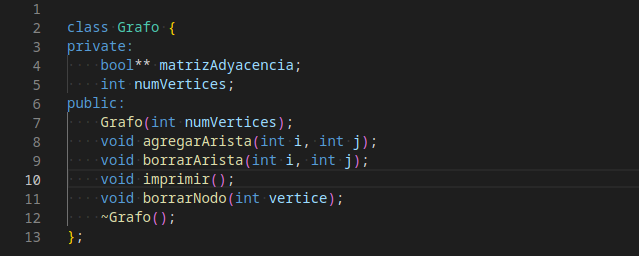
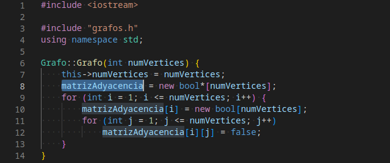
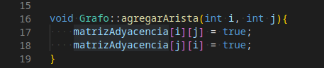
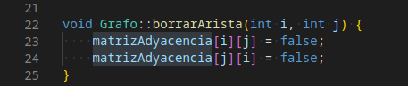
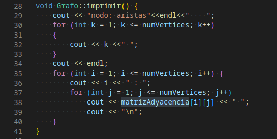
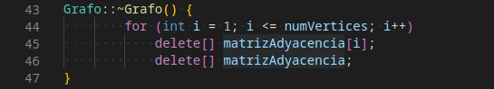
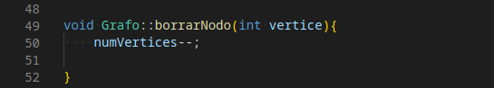
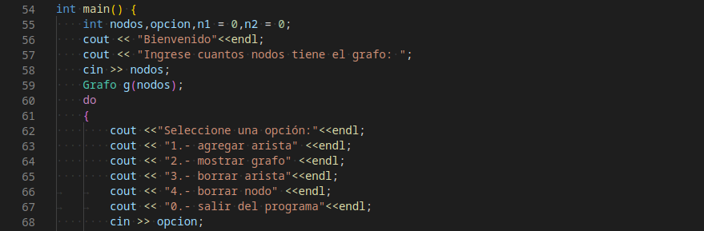
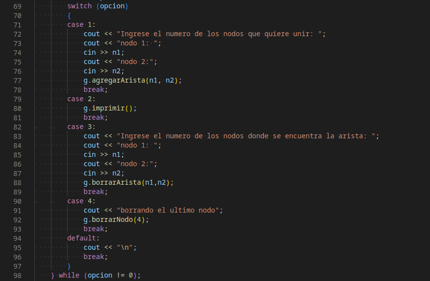

estructura de datos: Grafos
para utlizar la Grafos en el programa se crea la clase Grafos como se muestra acontinuacion

la clase se guarda en un archivo cabecera ".h"

Constructor del objeto
El constructor recibe como parametro de entrada el numero de nodos y crea la matriz de adyacencia de tipo bool

Método para agregar una arista a la matriz de adyacencia

Método para borrar una arista de la matriz de adyacencia

Método para imprimir en pantalla los nodos y la matriz de adyacencia del grafo

Destructor del objeto

Método para borrar un nodo del grafo

Menú principal con las distintas opciones disponibles para el grafo
